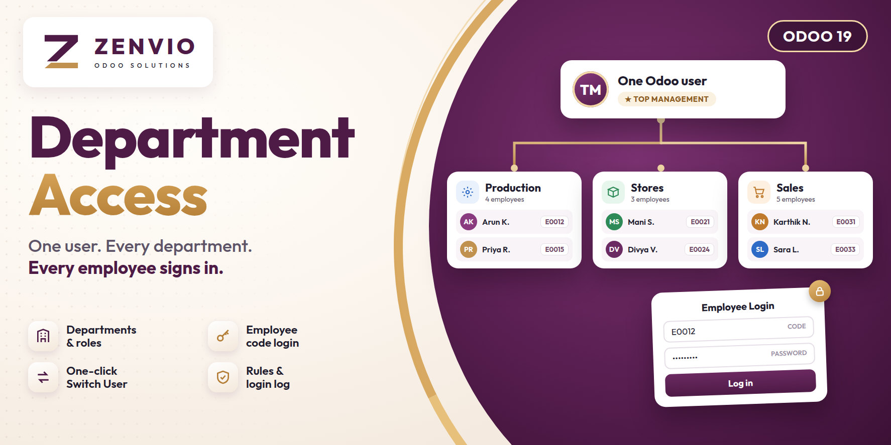
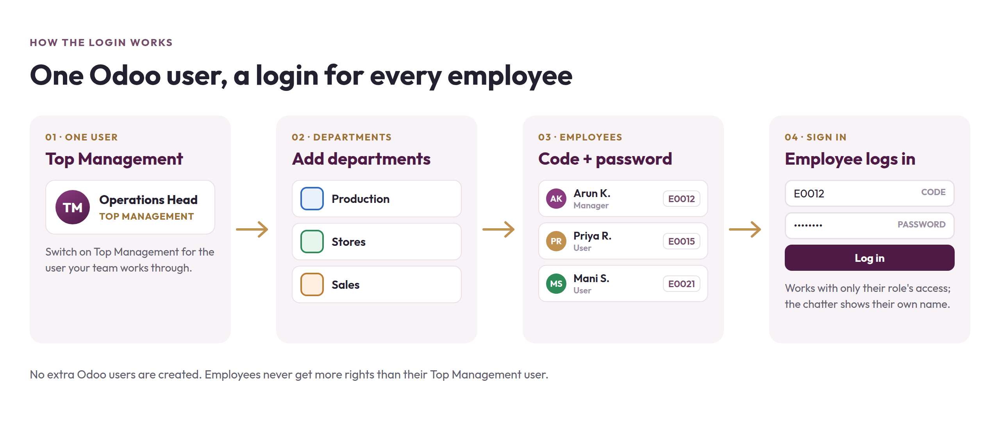
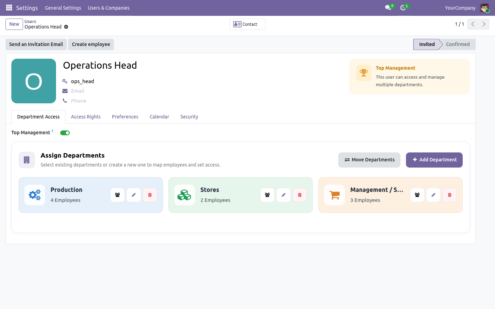
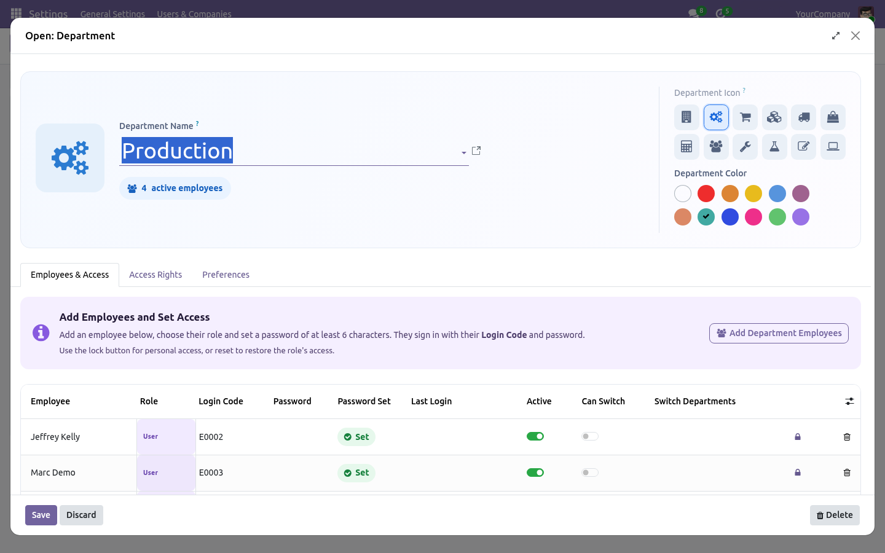
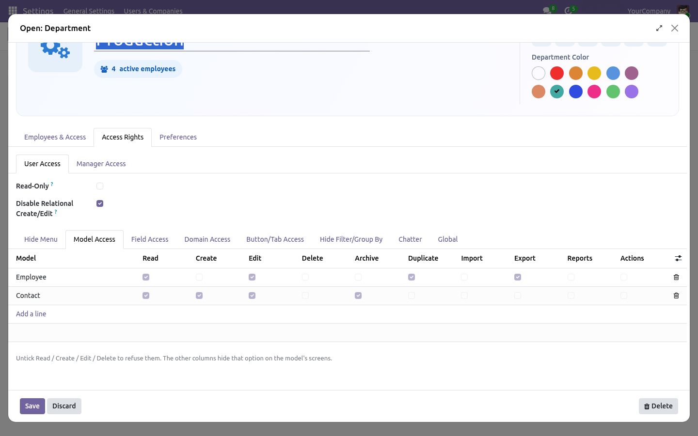
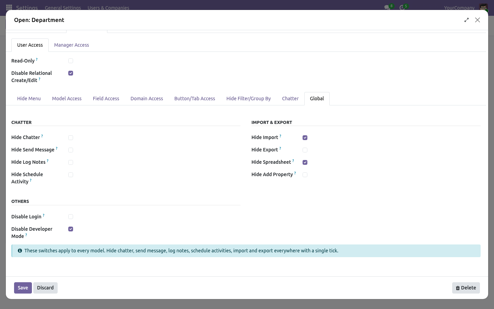
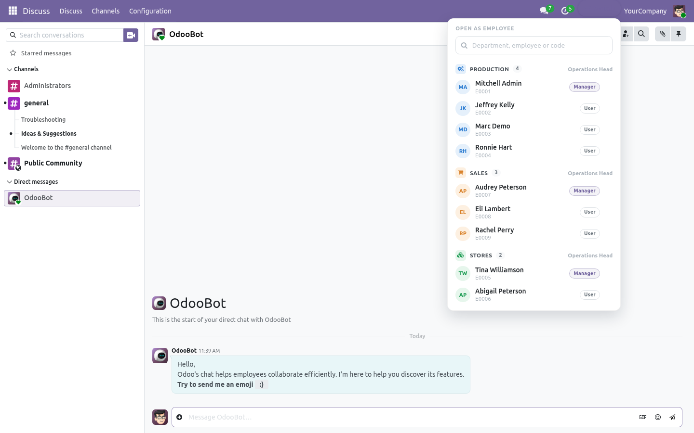
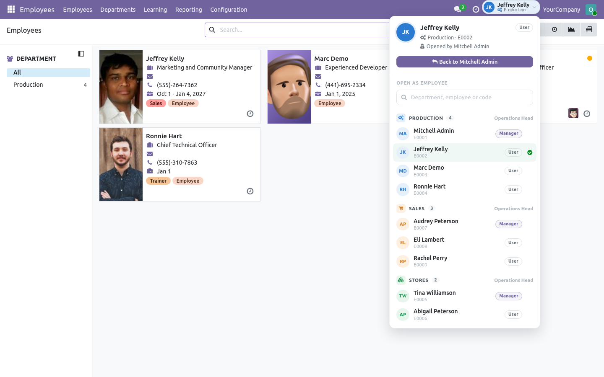

<section class="oe_container" style="box-sizing:border-box;display:block;max-width:1320px;width:100%;margin:0 auto;line-height:1.6;font-family:Arial,Helvetica,sans-serif;color:#282532;background-color:#FFFFFF;">
<div class="container py-3" style="box-sizing:border-box;width:100%;margin:0 auto;padding:0 16px;padding-top:16px;padding-bottom:16px;">
<div class="row align-items-center mb-3" style="box-sizing:border-box;display:flex;flex-wrap:wrap;margin-left:-10px;margin-right:-10px;align-items:center;margin-bottom:16px;"><div class="col-sm-4" style="box-sizing:border-box;flex:1 1 280px;min-width:0;max-width:100%;padding-left:10px;padding-right:10px;"></div><div class="col-sm-8 text-sm-right text-sm-end" style="box-sizing:border-box;flex:2 1 560px;min-width:0;max-width:100%;padding-left:10px;padding-right:10px;"><span class="badge p-2 m-1" style="box-sizing:border-box;display:inline-block;font-size:12px;font-weight:700;line-height:1.3;border-radius:5px;padding:8px;margin:4px;color:#714B67;background-color:#F6F1F6;">Odoo 19</span><span class="badge p-2 m-1" style="box-sizing:border-box;display:inline-block;font-size:12px;font-weight:700;line-height:1.3;border-radius:5px;padding:8px;margin:4px;color:#714B67;background-color:#F6F1F6;">Community &amp; Enterprise</span></div></div>
<section id="overview" class="p-3 p-md-4 my-3 rounded" style="box-sizing:border-box;padding:16px;margin-top:16px;margin-bottom:16px;border-radius:10px;background-color:#F6F1F6;">
<div class="text-center mb-4" style="box-sizing:border-box;text-align:center;margin-bottom:24px;"><p style="box-sizing:border-box;margin:0 0 16px;overflow-wrap:anywhere;font-size:12px;letter-spacing:2px;color:#9A7135;font-weight:700;">ZENVIO ODOO SOLUTIONS</p><h1 style="box-sizing:border-box;margin:0 0 16px;line-height:1.15;font-size:42px;font-weight:800;color:#282532;">Zenvio Department Access</h1><p style="box-sizing:border-box;margin:0 0 16px;overflow-wrap:anywhere;font-size:20px;line-height:1.5;color:#714B67;">One Odoo user for a whole department: every employee signs in with their own code and password.</p></div><div class="row mb-4" style="box-sizing:border-box;display:flex;flex-wrap:wrap;margin-left:-10px;margin-right:-10px;margin-bottom:24px;"><div class="col-6 col-md-4 col-lg-2 mb-2" style="box-sizing:border-box;flex:1 1 125px;min-width:0;max-width:100%;padding-left:10px;padding-right:10px;margin-bottom:8px;"><div class="h-100 p-3 text-center rounded" style="box-sizing:border-box;height:100%;padding:16px;text-align:center;border-radius:10px;background-color:#302236;"><div style="box-sizing:border-box;color:#E5BE7E;font-size:21px;font-weight:700;">19.0</div><div style="box-sizing:border-box;color:#F5EFF6;font-size:13px;">Odoo version</div></div></div><div class="col-6 col-md-4 col-lg-2 mb-2" style="box-sizing:border-box;flex:1 1 125px;min-width:0;max-width:100%;padding-left:10px;padding-right:10px;margin-bottom:8px;"><div class="h-100 p-3 text-center rounded" style="box-sizing:border-box;height:100%;padding:16px;text-align:center;border-radius:10px;background-color:#302236;"><div style="box-sizing:border-box;color:#E5BE7E;font-size:21px;font-weight:700;">CE / EE</div><div style="box-sizing:border-box;color:#F5EFF6;font-size:13px;">Editions</div></div></div><div class="col-6 col-md-4 col-lg-2 mb-2" style="box-sizing:border-box;flex:1 1 125px;min-width:0;max-width:100%;padding-left:10px;padding-right:10px;margin-bottom:8px;"><div class="h-100 p-3 text-center rounded" style="box-sizing:border-box;height:100%;padding:16px;text-align:center;border-radius:10px;background-color:#302236;"><div style="box-sizing:border-box;color:#E5BE7E;font-size:21px;font-weight:700;">Odoo.sh</div><div style="box-sizing:border-box;color:#F5EFF6;font-size:13px;">Cloud deployment</div></div></div><div class="col-6 col-md-4 col-lg-2 mb-2" style="box-sizing:border-box;flex:1 1 125px;min-width:0;max-width:100%;padding-left:10px;padding-right:10px;margin-bottom:8px;"><div class="h-100 p-3 text-center rounded" style="box-sizing:border-box;height:100%;padding:16px;text-align:center;border-radius:10px;background-color:#302236;"><div style="box-sizing:border-box;color:#E5BE7E;font-size:21px;font-weight:700;">On-premise</div><div style="box-sizing:border-box;color:#F5EFF6;font-size:13px;">Self-hosted</div></div></div><div class="col-6 col-md-4 col-lg-2 mb-2" style="box-sizing:border-box;flex:1 1 125px;min-width:0;max-width:100%;padding-left:10px;padding-right:10px;margin-bottom:8px;"><div class="h-100 p-3 text-center rounded" style="box-sizing:border-box;height:100%;padding:16px;text-align:center;border-radius:10px;background-color:#302236;"><div style="box-sizing:border-box;color:#E5BE7E;font-size:21px;font-weight:700;">OPL-1</div><div style="box-sizing:border-box;color:#F5EFF6;font-size:13px;">Module license</div></div></div><div class="col-6 col-md-4 col-lg-2 mb-2" style="box-sizing:border-box;flex:1 1 125px;min-width:0;max-width:100%;padding-left:10px;padding-right:10px;margin-bottom:8px;"><div class="h-100 p-3 text-center rounded" style="box-sizing:border-box;height:100%;padding:16px;text-align:center;border-radius:10px;background-color:#302236;"><div style="box-sizing:border-box;color:#E5BE7E;font-size:21px;font-weight:700;">1 user</div><div style="box-sizing:border-box;color:#F5EFF6;font-size:13px;">Many employees</div></div></div></div><div class="row align-items-center" style="box-sizing:border-box;display:flex;flex-wrap:wrap;margin-left:-10px;margin-right:-10px;align-items:center;"><div class="col-lg-6 mb-4" style="box-sizing:border-box;flex:1 1 420px;min-width:0;max-width:100%;padding-left:10px;padding-right:10px;margin-bottom:24px;"><h2 style="box-sizing:border-box;margin:0 0 16px;line-height:1.3;font-size:27px;font-weight:700;color:#282532;">One user. Every department. Every employee.</h2><p class="" style="box-sizing:border-box;margin:0 0 16px;overflow-wrap:anywhere;color:#625F6C;font-size:16px;line-height:1.8;">Turn on Top Management for one Odoo user, then add your departments and the employees who work in them. Each employee signs in with their own login code and password through that single user, so you create no extra Odoo users, and each person works with exactly the menus, records and buttons their role allows.</p><ul class="pl-4" style="box-sizing:border-box;padding-left:24px;color:#514A59;font-size:16px;line-height:1.9;"><li style="box-sizing:border-box;">Departments and employees under one Top Management user</li><li style="box-sizing:border-box;">A login code and password for every employee</li><li style="box-sizing:border-box;">User and Manager access for each department</li><li style="box-sizing:border-box;">One-click Switch User, with every login logged</li></ul><a href="#how" class="btn px-4 py-3 m-1" style="box-sizing:border-box;text-decoration:none;display:inline-block;text-align:center;line-height:1.5;padding-left:24px;padding-right:24px;padding-top:16px;padding-bottom:16px;margin:4px;background-color:#714B67;color:#FFFFFF;border:1px solid #714B67;font-size:15px;font-weight:700;border-radius:8px;">How it works</a><a href="#setup" class="btn px-4 py-3 m-1" style="box-sizing:border-box;text-decoration:none;display:inline-block;text-align:center;line-height:1.5;padding-left:24px;padding-right:24px;padding-top:16px;padding-bottom:16px;margin:4px;background-color:#FFFFFF;color:#714B67;border:1px solid #714B67;font-size:15px;font-weight:700;border-radius:8px;">Setup guide</a></div><div class="col-lg-6 mb-4" style="box-sizing:border-box;flex:1 1 420px;min-width:0;max-width:100%;padding-left:10px;padding-right:10px;margin-bottom:24px;"><div class="p-3 rounded" style="box-sizing:border-box;padding:16px;border-radius:10px;background-color:#302236;"><div class="p-3 rounded" style="box-sizing:border-box;padding:16px;border-radius:10px;background-color:#FFFFFF;"><p style="box-sizing:border-box;margin:0 0 16px;overflow-wrap:anywhere;color:#714B67;font-size:12px;font-weight:700;letter-spacing:1px;">EVERYTHING ON ONE SCREEN</p><div class="row" style="box-sizing:border-box;display:flex;flex-wrap:wrap;margin-left:-10px;margin-right:-10px;"><div class="col-sm-6 mb-3" style="box-sizing:border-box;flex:1 1 180px;min-width:0;max-width:100%;padding-left:10px;padding-right:10px;margin-bottom:16px;"><div class="h-100 border rounded p-3" style="box-sizing:border-box;height:100%;border:1px solid #E6DFE8;border-radius:10px;padding:16px;background-color:#F8F5F9;"><h3 style="box-sizing:border-box;margin:0 0 16px;line-height:1.3;font-size:18px;color:#714B67;">Departments</h3><p class="mb-0" style="box-sizing:border-box;margin:0 0 16px;overflow-wrap:anywhere;margin-bottom:0;font-size:14px;color:#625F6C;line-height:1.5;">Production, Stores, Sales ... with icon and colour</p></div></div><div class="col-sm-6 mb-3" style="box-sizing:border-box;flex:1 1 180px;min-width:0;max-width:100%;padding-left:10px;padding-right:10px;margin-bottom:16px;"><div class="h-100 border rounded p-3" style="box-sizing:border-box;height:100%;border:1px solid #E6DFE8;border-radius:10px;padding:16px;background-color:#F8F5F9;"><h3 style="box-sizing:border-box;margin:0 0 16px;line-height:1.3;font-size:18px;color:#714B67;">Employees &amp; codes</h3><p class="mb-0" style="box-sizing:border-box;margin:0 0 16px;overflow-wrap:anywhere;margin-bottom:0;font-size:14px;color:#625F6C;line-height:1.5;">Own login code and hashed password</p></div></div><div class="col-sm-6 mb-3" style="box-sizing:border-box;flex:1 1 180px;min-width:0;max-width:100%;padding-left:10px;padding-right:10px;margin-bottom:16px;"><div class="h-100 border rounded p-3" style="box-sizing:border-box;height:100%;border:1px solid #E6DFE8;border-radius:10px;padding:16px;background-color:#F8F5F9;"><h3 style="box-sizing:border-box;margin:0 0 16px;line-height:1.3;font-size:18px;color:#714B67;">Role access</h3><p class="mb-0" style="box-sizing:border-box;margin:0 0 16px;overflow-wrap:anywhere;margin-bottom:0;font-size:14px;color:#625F6C;line-height:1.5;">User and Manager rules per department</p></div></div><div class="col-sm-6 mb-3" style="box-sizing:border-box;flex:1 1 180px;min-width:0;max-width:100%;padding-left:10px;padding-right:10px;margin-bottom:16px;"><div class="h-100 border rounded p-3" style="box-sizing:border-box;height:100%;border:1px solid #E6DFE8;border-radius:10px;padding:16px;background-color:#F8F5F9;"><h3 style="box-sizing:border-box;margin:0 0 16px;line-height:1.3;font-size:18px;color:#714B67;">Personal access</h3><p class="mb-0" style="box-sizing:border-box;margin:0 0 16px;overflow-wrap:anywhere;margin-bottom:0;font-size:14px;color:#625F6C;line-height:1.5;">Rules for one employee only</p></div></div><div class="col-sm-6 mb-3" style="box-sizing:border-box;flex:1 1 180px;min-width:0;max-width:100%;padding-left:10px;padding-right:10px;margin-bottom:16px;"><div class="h-100 border rounded p-3" style="box-sizing:border-box;height:100%;border:1px solid #E6DFE8;border-radius:10px;padding:16px;background-color:#F8F5F9;"><h3 style="box-sizing:border-box;margin:0 0 16px;line-height:1.3;font-size:18px;color:#714B67;">Switch User</h3><p class="mb-0" style="box-sizing:border-box;margin:0 0 16px;overflow-wrap:anywhere;margin-bottom:0;font-size:14px;color:#625F6C;line-height:1.5;">Open Odoo as any employee</p></div></div><div class="col-sm-6 mb-3" style="box-sizing:border-box;flex:1 1 180px;min-width:0;max-width:100%;padding-left:10px;padding-right:10px;margin-bottom:16px;"><div class="h-100 border rounded p-3" style="box-sizing:border-box;height:100%;border:1px solid #E6DFE8;border-radius:10px;padding:16px;background-color:#F8F5F9;"><h3 style="box-sizing:border-box;margin:0 0 16px;line-height:1.3;font-size:18px;color:#714B67;">Login log</h3><p class="mb-0" style="box-sizing:border-box;margin:0 0 16px;overflow-wrap:anywhere;margin-bottom:0;font-size:14px;color:#625F6C;line-height:1.5;">Every login, failure and switch</p></div></div></div></div></div></div></div>
</section>
<div class="text-center p-2 my-3 border rounded" style="box-sizing:border-box;text-align:center;padding:8px;margin-top:16px;margin-bottom:16px;border:1px solid #E6DFE8;border-radius:10px;background-color:#FFFFFF;"><a href="#overview" class="d-inline-block px-3 py-2" style="box-sizing:border-box;text-decoration:none;display:inline-block;padding-left:16px;padding-right:16px;padding-top:8px;padding-bottom:8px;color:#714B67;font-size:14px;font-weight:700;">Overview</a><a href="#how" class="d-inline-block px-3 py-2" style="box-sizing:border-box;text-decoration:none;display:inline-block;padding-left:16px;padding-right:16px;padding-top:8px;padding-bottom:8px;color:#714B67;font-size:14px;font-weight:700;">How it works</a><a href="#features" class="d-inline-block px-3 py-2" style="box-sizing:border-box;text-decoration:none;display:inline-block;padding-left:16px;padding-right:16px;padding-top:8px;padding-bottom:8px;color:#714B67;font-size:14px;font-weight:700;">Features</a><a href="#rules" class="d-inline-block px-3 py-2" style="box-sizing:border-box;text-decoration:none;display:inline-block;padding-left:16px;padding-right:16px;padding-top:8px;padding-bottom:8px;color:#714B67;font-size:14px;font-weight:700;">Access rules</a><a href="#setup" class="d-inline-block px-3 py-2" style="box-sizing:border-box;text-decoration:none;display:inline-block;padding-left:16px;padding-right:16px;padding-top:8px;padding-bottom:8px;color:#714B67;font-size:14px;font-weight:700;">Setup</a><a href="#screenshots" class="d-inline-block px-3 py-2" style="box-sizing:border-box;text-decoration:none;display:inline-block;padding-left:16px;padding-right:16px;padding-top:8px;padding-bottom:8px;color:#714B67;font-size:14px;font-weight:700;">Screenshots</a><a href="#documentation" class="d-inline-block px-3 py-2" style="box-sizing:border-box;text-decoration:none;display:inline-block;padding-left:16px;padding-right:16px;padding-top:8px;padding-bottom:8px;color:#714B67;font-size:14px;font-weight:700;">Documentation</a><a href="#faq" class="d-inline-block px-3 py-2" style="box-sizing:border-box;text-decoration:none;display:inline-block;padding-left:16px;padding-right:16px;padding-top:8px;padding-bottom:8px;color:#714B67;font-size:14px;font-weight:700;">FAQs</a><a href="#support" class="d-inline-block px-3 py-2" style="box-sizing:border-box;text-decoration:none;display:inline-block;padding-left:16px;padding-right:16px;padding-top:8px;padding-bottom:8px;color:#714B67;font-size:14px;font-weight:700;">Support</a></div>
<div class="my-4" style="box-sizing:border-box;margin-top:24px;margin-bottom:24px;"></div>
<section id="how" class="p-3 p-md-4 my-3 rounded" style="box-sizing:border-box;padding:16px;margin-top:16px;margin-bottom:16px;border-radius:10px;background-color:#F6F1F6;">
<p class="mb-2" style="box-sizing:border-box;margin:0 0 16px;overflow-wrap:anywhere;margin-bottom:8px;color:#714B67;font-size:12px;font-weight:700;letter-spacing:2px;">HOW IT WORKS</p>
<h2 class="mb-4" style="box-sizing:border-box;margin:0 0 16px;line-height:1.3;margin-bottom:24px;color:#282532;font-size:29px;font-weight:700;">Create departments and employee logins with a single user</h2><div class="row" style="box-sizing:border-box;display:flex;flex-wrap:wrap;margin-left:-10px;margin-right:-10px;"><div class="col-md-6 col-lg-3 mb-3" style="box-sizing:border-box;flex:1 1 210px;min-width:0;max-width:100%;padding-left:10px;padding-right:10px;margin-bottom:16px;"><div class="h-100 border rounded p-3" style="box-sizing:border-box;height:100%;border:1px solid #E6DFE8;border-radius:10px;padding:16px;background-color:#FFFFFF;"><p style="box-sizing:border-box;margin:0 0 16px;overflow-wrap:anywhere;color:#9A7135;font-weight:700;font-size:12px;">01 / ONE USER</p><h3 style="box-sizing:border-box;margin:0 0 16px;line-height:1.3;font-size:19px;color:#282532;">Turn on Top Management</h3><p class="" style="box-sizing:border-box;margin:0 0 16px;overflow-wrap:anywhere;color:#625F6C;font-size:16px;line-height:1.8;">Open Settings → Users, choose the user your team works through and switch on Top Management on the Department Access tab.</p></div></div><div class="col-md-6 col-lg-3 mb-3" style="box-sizing:border-box;flex:1 1 210px;min-width:0;max-width:100%;padding-left:10px;padding-right:10px;margin-bottom:16px;"><div class="h-100 border rounded p-3" style="box-sizing:border-box;height:100%;border:1px solid #E6DFE8;border-radius:10px;padding:16px;background-color:#FFFFFF;"><p style="box-sizing:border-box;margin:0 0 16px;overflow-wrap:anywhere;color:#9A7135;font-weight:700;font-size:12px;">02 / DEPARTMENTS</p><h3 style="box-sizing:border-box;margin:0 0 16px;line-height:1.3;font-size:19px;color:#282532;">Add departments</h3><p class="" style="box-sizing:border-box;margin:0 0 16px;overflow-wrap:anywhere;color:#625F6C;font-size:16px;line-height:1.8;">Pick an existing HR department or type a new name. Choose its icon and colour for the department card.</p></div></div><div class="col-md-6 col-lg-3 mb-3" style="box-sizing:border-box;flex:1 1 210px;min-width:0;max-width:100%;padding-left:10px;padding-right:10px;margin-bottom:16px;"><div class="h-100 border rounded p-3" style="box-sizing:border-box;height:100%;border:1px solid #E6DFE8;border-radius:10px;padding:16px;background-color:#FFFFFF;"><p style="box-sizing:border-box;margin:0 0 16px;overflow-wrap:anywhere;color:#9A7135;font-weight:700;font-size:12px;">03 / EMPLOYEES</p><h3 style="box-sizing:border-box;margin:0 0 16px;line-height:1.3;font-size:19px;color:#282532;">Add employees</h3><p class="" style="box-sizing:border-box;margin:0 0 16px;overflow-wrap:anywhere;color:#625F6C;font-size:16px;line-height:1.8;">Add each employee with a role (User or Manager) and a password of at least 6 characters. The login code is filled in for you.</p></div></div><div class="col-md-6 col-lg-3 mb-3" style="box-sizing:border-box;flex:1 1 210px;min-width:0;max-width:100%;padding-left:10px;padding-right:10px;margin-bottom:16px;"><div class="h-100 border rounded p-3" style="box-sizing:border-box;height:100%;border:1px solid #E6DFE8;border-radius:10px;padding:16px;background-color:#FFFFFF;"><p style="box-sizing:border-box;margin:0 0 16px;overflow-wrap:anywhere;color:#9A7135;font-weight:700;font-size:12px;">04 / SIGN IN</p><h3 style="box-sizing:border-box;margin:0 0 16px;line-height:1.3;font-size:19px;color:#282532;">Employees log in</h3><p class="" style="box-sizing:border-box;margin:0 0 16px;overflow-wrap:anywhere;color:#625F6C;font-size:16px;line-height:1.8;">Employees type their code and password on the normal login page. They work as themselves: the chatter and the Login Log show the real person.</p></div></div></div>
</section>
<section id="features" class="p-3 p-md-4 my-3 rounded" style="box-sizing:border-box;padding:16px;margin-top:16px;margin-bottom:16px;border-radius:10px;background-color:#FFFFFF;">
<p class="mb-2" style="box-sizing:border-box;margin:0 0 16px;overflow-wrap:anywhere;margin-bottom:8px;color:#714B67;font-size:12px;font-weight:700;letter-spacing:2px;">FEATURES</p>
<h2 class="mb-4" style="box-sizing:border-box;margin:0 0 16px;line-height:1.3;margin-bottom:24px;color:#282532;font-size:29px;font-weight:700;">Everything a department needs, nothing more</h2><p class="" style="box-sizing:border-box;margin:0 0 16px;overflow-wrap:anywhere;color:#625F6C;font-size:16px;line-height:1.8;">Set up departments, people and their access from the user form, then let each employee work with exactly what their role allows.</p><div class="row" style="box-sizing:border-box;display:flex;flex-wrap:wrap;margin-left:-10px;margin-right:-10px;">
<div class="col-md-6 col-lg-4 mb-3" style="box-sizing:border-box;flex:1 1 280px;min-width:0;max-width:100%;padding-left:10px;padding-right:10px;margin-bottom:16px;"><div class="h-100 p-4 border rounded" style="box-sizing:border-box;height:100%;padding:24px;border:1px solid #E6DFE8;border-radius:10px;border-color:#E6DFE8;background-color:#FFFFFF;">
<p style="box-sizing:border-box;margin:0 0 16px;overflow-wrap:anywhere;color:#9A7135;font-size:13px;font-weight:700;">01</p><h3 style="box-sizing:border-box;margin:0 0 16px;line-height:1.3;color:#282532;font-size:20px;font-weight:700;">Departments under one user</h3>
<p class="" style="box-sizing:border-box;margin:0 0 16px;overflow-wrap:anywhere;color:#625F6C;font-size:16px;line-height:1.8;">Every department belongs to a Top Management user. Its employees sign in through that user and never get more rights than that user has.</p></div></div>
<div class="col-md-6 col-lg-4 mb-3" style="box-sizing:border-box;flex:1 1 280px;min-width:0;max-width:100%;padding-left:10px;padding-right:10px;margin-bottom:16px;"><div class="h-100 p-4 border rounded" style="box-sizing:border-box;height:100%;padding:24px;border:1px solid #E6DFE8;border-radius:10px;border-color:#E6DFE8;background-color:#FFFFFF;">
<p style="box-sizing:border-box;margin:0 0 16px;overflow-wrap:anywhere;color:#9A7135;font-size:13px;font-weight:700;">02</p><h3 style="box-sizing:border-box;margin:0 0 16px;line-height:1.3;color:#282532;font-size:20px;font-weight:700;">Eight kinds of rules</h3>
<p class="" style="box-sizing:border-box;margin:0 0 16px;overflow-wrap:anywhere;color:#625F6C;font-size:16px;line-height:1.8;">Hide menus, limit models, fields and records, hide buttons and tabs, filters and group-bys, chatter actions, and global switches such as read-only.</p></div></div>
<div class="col-md-6 col-lg-4 mb-3" style="box-sizing:border-box;flex:1 1 280px;min-width:0;max-width:100%;padding-left:10px;padding-right:10px;margin-bottom:16px;"><div class="h-100 p-4 border rounded" style="box-sizing:border-box;height:100%;padding:24px;border:1px solid #E6DFE8;border-radius:10px;border-color:#E6DFE8;background-color:#FFFFFF;">
<p style="box-sizing:border-box;margin:0 0 16px;overflow-wrap:anywhere;color:#9A7135;font-size:13px;font-weight:700;">03</p><h3 style="box-sizing:border-box;margin:0 0 16px;line-height:1.3;color:#282532;font-size:20px;font-weight:700;">User and Manager roles</h3>
<p class="" style="box-sizing:border-box;margin:0 0 16px;overflow-wrap:anywhere;color:#625F6C;font-size:16px;line-height:1.8;">Each department has a User Access and a Manager Access. Give an employee a role and they get its rules straight away.</p></div></div>
<div class="col-md-6 col-lg-4 mb-3" style="box-sizing:border-box;flex:1 1 280px;min-width:0;max-width:100%;padding-left:10px;padding-right:10px;margin-bottom:16px;"><div class="h-100 p-4 border rounded" style="box-sizing:border-box;height:100%;padding:24px;border:1px solid #E6DFE8;border-radius:10px;border-color:#E6DFE8;background-color:#FFFFFF;">
<p style="box-sizing:border-box;margin:0 0 16px;overflow-wrap:anywhere;color:#9A7135;font-size:13px;font-weight:700;">04</p><h3 style="box-sizing:border-box;margin:0 0 16px;line-height:1.3;color:#282532;font-size:20px;font-weight:700;">Personal access</h3>
<p class="" style="box-sizing:border-box;margin:0 0 16px;overflow-wrap:anywhere;color:#625F6C;font-size:16px;line-height:1.8;">The lock button on an employee line gives that person rules of their own, starting as a copy of their role. Reset returns them to the role.</p></div></div>
<div class="col-md-6 col-lg-4 mb-3" style="box-sizing:border-box;flex:1 1 280px;min-width:0;max-width:100%;padding-left:10px;padding-right:10px;margin-bottom:16px;"><div class="h-100 p-4 border rounded" style="box-sizing:border-box;height:100%;padding:24px;border:1px solid #E6DFE8;border-radius:10px;border-color:#E6DFE8;background-color:#FFFFFF;">
<p style="box-sizing:border-box;margin:0 0 16px;overflow-wrap:anywhere;color:#9A7135;font-size:13px;font-weight:700;">05</p><h3 style="box-sizing:border-box;margin:0 0 16px;line-height:1.3;color:#282532;font-size:20px;font-weight:700;">Switch User</h3>
<p class="" style="box-sizing:border-box;margin:0 0 16px;overflow-wrap:anywhere;color:#625F6C;font-size:16px;line-height:1.8;">Administrators and Top Management users open Odoo as any of their employees without the password, see exactly what they see, then come back.</p></div></div>
<div class="col-md-6 col-lg-4 mb-3" style="box-sizing:border-box;flex:1 1 280px;min-width:0;max-width:100%;padding-left:10px;padding-right:10px;margin-bottom:16px;"><div class="h-100 p-4 border rounded" style="box-sizing:border-box;height:100%;padding:24px;border:1px solid #E6DFE8;border-radius:10px;border-color:#E6DFE8;background-color:#FFFFFF;">
<p style="box-sizing:border-box;margin:0 0 16px;overflow-wrap:anywhere;color:#9A7135;font-size:13px;font-weight:700;">06</p><h3 style="box-sizing:border-box;margin:0 0 16px;line-height:1.3;color:#282532;font-size:20px;font-weight:700;">Secure employee login</h3>
<p class="" style="box-sizing:border-box;margin:0 0 16px;overflow-wrap:anywhere;color:#625F6C;font-size:16px;line-height:1.8;">Hashed passwords, five wrong attempts lock only that code for a minute, and every login, failure and switch is kept in the Login Log.</p></div></div>
</div>
</section>
<section id="rules" class="p-3 p-md-4 my-3 rounded" style="box-sizing:border-box;padding:16px;margin-top:16px;margin-bottom:16px;border-radius:10px;background-color:#F6F1F6;">
<p class="mb-2" style="box-sizing:border-box;margin:0 0 16px;overflow-wrap:anywhere;margin-bottom:8px;color:#714B67;font-size:12px;font-weight:700;letter-spacing:2px;">ACCESS RULES</p>
<h2 class="mb-4" style="box-sizing:border-box;margin:0 0 16px;line-height:1.3;margin-bottom:24px;color:#282532;font-size:29px;font-weight:700;">Eight kinds of rules, per role or per employee</h2><div class="row" style="box-sizing:border-box;display:flex;flex-wrap:wrap;margin-left:-10px;margin-right:-10px;"><div class="col-md-6 col-lg-3 mb-3" style="box-sizing:border-box;flex:1 1 210px;min-width:0;max-width:100%;padding-left:10px;padding-right:10px;margin-bottom:16px;"><div class="h-100 p-4 border rounded" style="box-sizing:border-box;height:100%;padding:24px;border:1px solid #E6DFE8;border-radius:10px;background-color:#FFFFFF;"><p class="mb-3" style="box-sizing:border-box;margin:0 0 16px;overflow-wrap:anywhere;margin-bottom:16px;font-size:12px;color:#714B67;font-weight:700;">ENFORCED: SCREEN</p><h3 style="box-sizing:border-box;margin:0 0 16px;line-height:1.3;color:#282532;font-size:21px;">Hide Menu</h3><p class="" style="box-sizing:border-box;margin:0 0 16px;overflow-wrap:anywhere;color:#625F6C;font-size:16px;line-height:1.8;">Menus are hidden together with all their sub-menus.</p></div></div><div class="col-md-6 col-lg-3 mb-3" style="box-sizing:border-box;flex:1 1 210px;min-width:0;max-width:100%;padding-left:10px;padding-right:10px;margin-bottom:16px;"><div class="h-100 p-4 border rounded" style="box-sizing:border-box;height:100%;padding:24px;border:1px solid #E6DFE8;border-radius:10px;background-color:#FFFFFF;"><p class="mb-3" style="box-sizing:border-box;margin:0 0 16px;overflow-wrap:anywhere;margin-bottom:16px;font-size:12px;color:#714B67;font-weight:700;">ENFORCED: SERVER</p><h3 style="box-sizing:border-box;margin:0 0 16px;line-height:1.3;color:#282532;font-size:21px;">Model Access</h3><p class="" style="box-sizing:border-box;margin:0 0 16px;overflow-wrap:anywhere;color:#625F6C;font-size:16px;line-height:1.8;">Read, create, edit and delete per model, plus hide archive, duplicate, import, export, reports and actions.</p></div></div><div class="col-md-6 col-lg-3 mb-3" style="box-sizing:border-box;flex:1 1 210px;min-width:0;max-width:100%;padding-left:10px;padding-right:10px;margin-bottom:16px;"><div class="h-100 p-4 border rounded" style="box-sizing:border-box;height:100%;padding:24px;border:1px solid #E6DFE8;border-radius:10px;background-color:#FFFFFF;"><p class="mb-3" style="box-sizing:border-box;margin:0 0 16px;overflow-wrap:anywhere;margin-bottom:16px;font-size:12px;color:#714B67;font-weight:700;">ENFORCED: SCREEN</p><h3 style="box-sizing:border-box;margin:0 0 16px;line-height:1.3;color:#282532;font-size:21px;">Field Access</h3><p class="" style="box-sizing:border-box;margin:0 0 16px;overflow-wrap:anywhere;color:#625F6C;font-size:16px;line-height:1.8;">Invisible, read-only, required or no link to the related record, optionally only in chosen states.</p></div></div><div class="col-md-6 col-lg-3 mb-3" style="box-sizing:border-box;flex:1 1 210px;min-width:0;max-width:100%;padding-left:10px;padding-right:10px;margin-bottom:16px;"><div class="h-100 p-4 border rounded" style="box-sizing:border-box;height:100%;padding:24px;border:1px solid #E6DFE8;border-radius:10px;background-color:#FFFFFF;"><p class="mb-3" style="box-sizing:border-box;margin:0 0 16px;overflow-wrap:anywhere;margin-bottom:16px;font-size:12px;color:#714B67;font-weight:700;">ENFORCED: SERVER</p><h3 style="box-sizing:border-box;margin:0 0 16px;line-height:1.3;color:#282532;font-size:21px;">Domain Access</h3><p class="" style="box-sizing:border-box;margin:0 0 16px;overflow-wrap:anywhere;color:#625F6C;font-size:16px;line-height:1.8;">Only the records a rule allows, for example the employees of their own department.</p></div></div><div class="col-md-6 col-lg-3 mb-3" style="box-sizing:border-box;flex:1 1 210px;min-width:0;max-width:100%;padding-left:10px;padding-right:10px;margin-bottom:16px;"><div class="h-100 p-4 border rounded" style="box-sizing:border-box;height:100%;padding:24px;border:1px solid #E6DFE8;border-radius:10px;background-color:#FFFFFF;"><p class="mb-3" style="box-sizing:border-box;margin:0 0 16px;overflow-wrap:anywhere;margin-bottom:16px;font-size:12px;color:#714B67;font-weight:700;">ENFORCED: SERVER &amp; SCREEN</p><h3 style="box-sizing:border-box;margin:0 0 16px;line-height:1.3;color:#282532;font-size:21px;">Button / Tab Access</h3><p class="" style="box-sizing:border-box;margin:0 0 16px;overflow-wrap:anywhere;color:#625F6C;font-size:16px;line-height:1.8;">Hide buttons and notebook tabs, optionally only in chosen states.</p></div></div><div class="col-md-6 col-lg-3 mb-3" style="box-sizing:border-box;flex:1 1 210px;min-width:0;max-width:100%;padding-left:10px;padding-right:10px;margin-bottom:16px;"><div class="h-100 p-4 border rounded" style="box-sizing:border-box;height:100%;padding:24px;border:1px solid #E6DFE8;border-radius:10px;background-color:#FFFFFF;"><p class="mb-3" style="box-sizing:border-box;margin:0 0 16px;overflow-wrap:anywhere;margin-bottom:16px;font-size:12px;color:#714B67;font-weight:700;">ENFORCED: SCREEN</p><h3 style="box-sizing:border-box;margin:0 0 16px;line-height:1.3;color:#282532;font-size:21px;">Filters &amp; Group By</h3><p class="" style="box-sizing:border-box;margin:0 0 16px;overflow-wrap:anywhere;color:#625F6C;font-size:16px;line-height:1.8;">Remove filters and group-bys from the search panel.</p></div></div><div class="col-md-6 col-lg-3 mb-3" style="box-sizing:border-box;flex:1 1 210px;min-width:0;max-width:100%;padding-left:10px;padding-right:10px;margin-bottom:16px;"><div class="h-100 p-4 border rounded" style="box-sizing:border-box;height:100%;padding:24px;border:1px solid #E6DFE8;border-radius:10px;background-color:#FFFFFF;"><p class="mb-3" style="box-sizing:border-box;margin:0 0 16px;overflow-wrap:anywhere;margin-bottom:16px;font-size:12px;color:#714B67;font-weight:700;">ENFORCED: SERVER &amp; SCREEN</p><h3 style="box-sizing:border-box;margin:0 0 16px;line-height:1.3;color:#282532;font-size:21px;">Chatter</h3><p class="" style="box-sizing:border-box;margin:0 0 16px;overflow-wrap:anywhere;color:#625F6C;font-size:16px;line-height:1.8;">Hide the chatter, send message, log note or schedule activity, per model.</p></div></div><div class="col-md-6 col-lg-3 mb-3" style="box-sizing:border-box;flex:1 1 210px;min-width:0;max-width:100%;padding-left:10px;padding-right:10px;margin-bottom:16px;"><div class="h-100 p-4 border rounded" style="box-sizing:border-box;height:100%;padding:24px;border:1px solid #E6DFE8;border-radius:10px;background-color:#FFFFFF;"><p class="mb-3" style="box-sizing:border-box;margin:0 0 16px;overflow-wrap:anywhere;margin-bottom:16px;font-size:12px;color:#714B67;font-weight:700;">ENFORCED: SERVER &amp; SCREEN</p><h3 style="box-sizing:border-box;margin:0 0 16px;line-height:1.3;color:#282532;font-size:21px;">Global</h3><p class="" style="box-sizing:border-box;margin:0 0 16px;overflow-wrap:anywhere;color:#625F6C;font-size:16px;line-height:1.8;">Read-only, no relational create/edit, no import, export or spreadsheet, disable login, disable developer mode.</p></div></div></div><div class="p-3 border rounded" style="box-sizing:border-box;padding:16px;border:1px solid #E6DFE8;border-radius:10px;background-color:#FFFFFF;"><h3 style="box-sizing:border-box;margin:0 0 16px;line-height:1.3;font-size:18px;color:#714B67;">Understand the scope</h3><p class="mb-0" style="box-sizing:border-box;margin:0 0 16px;overflow-wrap:anywhere;margin-bottom:0;color:#625F6C;font-size:16px;line-height:1.8;">Access only ever takes rights away from the Top Management user, it never adds any. Employees never see or change the access setup, users, passwords, groups, modules or settings. Odoo Enterprise: every person working in Odoo must still be covered by your Odoo subscription.</p></div>
</section>
<div class="row align-items-center p-3 p-md-4 my-4 rounded" style="box-sizing:border-box;display:flex;flex-wrap:wrap;margin-left:-10px;margin-right:-10px;align-items:center;padding:16px;margin-top:24px;margin-bottom:24px;border-radius:10px;background-color:#302236;"><div class="col-lg-8" style="box-sizing:border-box;flex:2 1 560px;min-width:0;max-width:100%;padding-left:10px;padding-right:10px;"><h3 style="box-sizing:border-box;margin:0 0 16px;line-height:1.3;color:#FFFFFF;font-size:25px;">Set up your first department in minutes</h3><p class="mb-2" style="box-sizing:border-box;margin:0 0 16px;overflow-wrap:anywhere;margin-bottom:8px;color:#E9DFEC;font-size:16px;line-height:1.7;">Turn on Top Management, add a department and its employees, then check the result with Switch User.</p></div><div class="col-lg-4 text-lg-right text-lg-end" style="box-sizing:border-box;flex:1 1 280px;min-width:0;max-width:100%;padding-left:10px;padding-right:10px;"><a href="#setup" class="btn px-4 py-3 m-1" style="box-sizing:border-box;text-decoration:none;display:inline-block;text-align:center;line-height:1.5;padding-left:24px;padding-right:24px;padding-top:16px;padding-bottom:16px;margin:4px;background-color:#FFFFFF;color:#714B67;border:1px solid #714B67;font-size:15px;font-weight:700;border-radius:8px;">Read the setup guide</a></div></div>
<section id="setup" class="p-3 p-md-4 my-3 rounded" style="box-sizing:border-box;padding:16px;margin-top:16px;margin-bottom:16px;border-radius:10px;background-color:#FFFFFF;">
<p class="mb-2" style="box-sizing:border-box;margin:0 0 16px;overflow-wrap:anywhere;margin-bottom:8px;color:#714B67;font-size:12px;font-weight:700;letter-spacing:2px;">GETTING STARTED</p>
<h2 class="mb-4" style="box-sizing:border-box;margin:0 0 16px;line-height:1.3;margin-bottom:24px;color:#282532;font-size:29px;font-weight:700;">Six steps from one user to a working team</h2><div class="p-3 p-md-4 border rounded mb-4" style="box-sizing:border-box;padding:16px;border:1px solid #E6DFE8;border-radius:10px;margin-bottom:24px;background-color:#F8F5EF;"><h3 style="box-sizing:border-box;margin:0 0 16px;line-height:1.3;font-size:21px;color:#282532;">Before installation</h3><p class="" style="box-sizing:border-box;margin:0 0 16px;overflow-wrap:anywhere;color:#625F6C;font-size:16px;line-height:1.8;">Odoo 19 on Odoo.sh or on-premise, with custom Python add-ons enabled. Standard Odoo Online does not support these modules.</p><ul style="box-sizing:border-box;color:#625F6C;font-size:16px;line-height:1.8;"><li class="mb-2" style="box-sizing:border-box;margin-bottom:8px;">Odoo 19 Community or Enterprise with the Employees (hr) app.</li><li class="mb-2" style="box-sizing:border-box;margin-bottom:8px;">An internal user to act as Top Management for each group of departments.</li><li class="mb-2" style="box-sizing:border-box;margin-bottom:8px;">Employees recorded in Odoo, or typed in while adding them to a department.</li></ul></div><div class="row" style="box-sizing:border-box;display:flex;flex-wrap:wrap;margin-left:-10px;margin-right:-10px;">
<div class="col-md-6 mb-3" style="box-sizing:border-box;flex:1 1 420px;min-width:0;max-width:100%;padding-left:10px;padding-right:10px;margin-bottom:16px;"><div class="h-100 p-4 border rounded" style="box-sizing:border-box;height:100%;padding:24px;border:1px solid #E6DFE8;border-radius:10px;border-color:#E6DFE8;background-color:#FFFFFF;">
<p style="box-sizing:border-box;margin:0 0 16px;overflow-wrap:anywhere;color:#9A7135;font-size:13px;font-weight:700;">01</p><h3 style="box-sizing:border-box;margin:0 0 16px;line-height:1.3;color:#282532;font-size:20px;font-weight:700;">Turn on Top Management</h3>
<p class="" style="box-sizing:border-box;margin:0 0 16px;overflow-wrap:anywhere;color:#625F6C;font-size:16px;line-height:1.8;">Settings → Users → open a user → Department Access tab → switch on Top Management.</p></div></div>
<div class="col-md-6 mb-3" style="box-sizing:border-box;flex:1 1 420px;min-width:0;max-width:100%;padding-left:10px;padding-right:10px;margin-bottom:16px;"><div class="h-100 p-4 border rounded" style="box-sizing:border-box;height:100%;padding:24px;border:1px solid #E6DFE8;border-radius:10px;border-color:#E6DFE8;background-color:#FFFFFF;">
<p style="box-sizing:border-box;margin:0 0 16px;overflow-wrap:anywhere;color:#9A7135;font-size:13px;font-weight:700;">02</p><h3 style="box-sizing:border-box;margin:0 0 16px;line-height:1.3;color:#282532;font-size:20px;font-weight:700;">Add a department</h3>
<p class="" style="box-sizing:border-box;margin:0 0 16px;overflow-wrap:anywhere;color:#625F6C;font-size:16px;line-height:1.8;">Click Add Department, choose or type the department, and pick its icon and colour.</p></div></div>
<div class="col-md-6 mb-3" style="box-sizing:border-box;flex:1 1 420px;min-width:0;max-width:100%;padding-left:10px;padding-right:10px;margin-bottom:16px;"><div class="h-100 p-4 border rounded" style="box-sizing:border-box;height:100%;padding:24px;border:1px solid #E6DFE8;border-radius:10px;border-color:#E6DFE8;background-color:#FFFFFF;">
<p style="box-sizing:border-box;margin:0 0 16px;overflow-wrap:anywhere;color:#9A7135;font-size:13px;font-weight:700;">03</p><h3 style="box-sizing:border-box;margin:0 0 16px;line-height:1.3;color:#282532;font-size:20px;font-weight:700;">Add employees</h3>
<p class="" style="box-sizing:border-box;margin:0 0 16px;overflow-wrap:anywhere;color:#625F6C;font-size:16px;line-height:1.8;">On Employees &amp; Access, add employees with their role and a password. Add Department Employees adds everyone of that HR department at once.</p></div></div>
<div class="col-md-6 mb-3" style="box-sizing:border-box;flex:1 1 420px;min-width:0;max-width:100%;padding-left:10px;padding-right:10px;margin-bottom:16px;"><div class="h-100 p-4 border rounded" style="box-sizing:border-box;height:100%;padding:24px;border:1px solid #E6DFE8;border-radius:10px;border-color:#E6DFE8;background-color:#FFFFFF;">
<p style="box-sizing:border-box;margin:0 0 16px;overflow-wrap:anywhere;color:#9A7135;font-size:13px;font-weight:700;">04</p><h3 style="box-sizing:border-box;margin:0 0 16px;line-height:1.3;color:#282532;font-size:20px;font-weight:700;">Set the access</h3>
<p class="" style="box-sizing:border-box;margin:0 0 16px;overflow-wrap:anywhere;color:#625F6C;font-size:16px;line-height:1.8;">On Access Rights, set what User Access and Manager Access allow, tab by tab.</p></div></div>
<div class="col-md-6 mb-3" style="box-sizing:border-box;flex:1 1 420px;min-width:0;max-width:100%;padding-left:10px;padding-right:10px;margin-bottom:16px;"><div class="h-100 p-4 border rounded" style="box-sizing:border-box;height:100%;padding:24px;border:1px solid #E6DFE8;border-radius:10px;border-color:#E6DFE8;background-color:#FFFFFF;">
<p style="box-sizing:border-box;margin:0 0 16px;overflow-wrap:anywhere;color:#9A7135;font-size:13px;font-weight:700;">05</p><h3 style="box-sizing:border-box;margin:0 0 16px;line-height:1.3;color:#282532;font-size:20px;font-weight:700;">Give personal access</h3>
<p class="" style="box-sizing:border-box;margin:0 0 16px;overflow-wrap:anywhere;color:#625F6C;font-size:16px;line-height:1.8;">Optional: the lock on an employee line gives that person their own rules; reset brings back the role.</p></div></div>
<div class="col-md-6 mb-3" style="box-sizing:border-box;flex:1 1 420px;min-width:0;max-width:100%;padding-left:10px;padding-right:10px;margin-bottom:16px;"><div class="h-100 p-4 border rounded" style="box-sizing:border-box;height:100%;padding:24px;border:1px solid #E6DFE8;border-radius:10px;border-color:#E6DFE8;background-color:#FFFFFF;">
<p style="box-sizing:border-box;margin:0 0 16px;overflow-wrap:anywhere;color:#9A7135;font-size:13px;font-weight:700;">06</p><h3 style="box-sizing:border-box;margin:0 0 16px;line-height:1.3;color:#282532;font-size:20px;font-weight:700;">Test with Switch</h3>
<p class="" style="box-sizing:border-box;margin:0 0 16px;overflow-wrap:anywhere;color:#625F6C;font-size:16px;line-height:1.8;">Use Switch in the top bar to open Odoo as the employee and check exactly what they see, then press Back.</p></div></div>
</div>
</section>
<section id="workflow" class="p-3 p-md-4 my-3 rounded" style="box-sizing:border-box;padding:16px;margin-top:16px;margin-bottom:16px;border-radius:10px;background-color:#F6F1F6;">
<p class="mb-2" style="box-sizing:border-box;margin:0 0 16px;overflow-wrap:anywhere;margin-bottom:8px;color:#714B67;font-size:12px;font-weight:700;letter-spacing:2px;">DAILY OPERATION</p>
<h2 class="mb-4" style="box-sizing:border-box;margin:0 0 16px;line-height:1.3;margin-bottom:24px;color:#282532;font-size:29px;font-weight:700;">What happens when an employee signs in</h2><div class="row" style="box-sizing:border-box;display:flex;flex-wrap:wrap;margin-left:-10px;margin-right:-10px;"><div class="col-md-6 col-lg-3 mb-3" style="box-sizing:border-box;flex:1 1 210px;min-width:0;max-width:100%;padding-left:10px;padding-right:10px;margin-bottom:16px;"><div class="h-100 border rounded p-3" style="box-sizing:border-box;height:100%;border:1px solid #E6DFE8;border-radius:10px;padding:16px;background-color:#FFFFFF;"><p style="box-sizing:border-box;margin:0 0 16px;overflow-wrap:anywhere;color:#9A7135;font-weight:700;font-size:12px;">01 / LOGIN</p><h3 style="box-sizing:border-box;margin:0 0 16px;line-height:1.3;font-size:19px;color:#282532;">Code and password</h3><p class="" style="box-sizing:border-box;margin:0 0 16px;overflow-wrap:anywhere;color:#625F6C;font-size:16px;line-height:1.8;">The employee signs in with their login code on the normal login page or on /web/department/login.</p></div></div><div class="col-md-6 col-lg-3 mb-3" style="box-sizing:border-box;flex:1 1 210px;min-width:0;max-width:100%;padding-left:10px;padding-right:10px;margin-bottom:16px;"><div class="h-100 border rounded p-3" style="box-sizing:border-box;height:100%;border:1px solid #E6DFE8;border-radius:10px;padding:16px;background-color:#FFFFFF;"><p style="box-sizing:border-box;margin:0 0 16px;overflow-wrap:anywhere;color:#9A7135;font-weight:700;font-size:12px;">02 / WORKSPACE</p><h3 style="box-sizing:border-box;margin:0 0 16px;line-height:1.3;font-size:19px;color:#282532;">Only their access</h3><p class="" style="box-sizing:border-box;margin:0 0 16px;overflow-wrap:anywhere;color:#625F6C;font-size:16px;line-height:1.8;">Menus, records, fields and buttons follow their role or personal access.</p></div></div><div class="col-md-6 col-lg-3 mb-3" style="box-sizing:border-box;flex:1 1 210px;min-width:0;max-width:100%;padding-left:10px;padding-right:10px;margin-bottom:16px;"><div class="h-100 border rounded p-3" style="box-sizing:border-box;height:100%;border:1px solid #E6DFE8;border-radius:10px;padding:16px;background-color:#FFFFFF;"><p style="box-sizing:border-box;margin:0 0 16px;overflow-wrap:anywhere;color:#9A7135;font-weight:700;font-size:12px;">03 / ACTIVITY</p><h3 style="box-sizing:border-box;margin:0 0 16px;line-height:1.3;font-size:19px;color:#282532;">Their own name</h3><p class="" style="box-sizing:border-box;margin:0 0 16px;overflow-wrap:anywhere;color:#625F6C;font-size:16px;line-height:1.8;">Messages and notes show the real employee, not the shared user.</p></div></div><div class="col-md-6 col-lg-3 mb-3" style="box-sizing:border-box;flex:1 1 210px;min-width:0;max-width:100%;padding-left:10px;padding-right:10px;margin-bottom:16px;"><div class="h-100 border rounded p-3" style="box-sizing:border-box;height:100%;border:1px solid #E6DFE8;border-radius:10px;padding:16px;background-color:#FFFFFF;"><p style="box-sizing:border-box;margin:0 0 16px;overflow-wrap:anywhere;color:#9A7135;font-weight:700;font-size:12px;">04 / AUDIT</p><h3 style="box-sizing:border-box;margin:0 0 16px;line-height:1.3;font-size:19px;color:#282532;">Everything logged</h3><p class="" style="box-sizing:border-box;margin:0 0 16px;overflow-wrap:anywhere;color:#625F6C;font-size:16px;line-height:1.8;">Logins, failed attempts and switches are kept in the Login Log with IP address.</p></div></div></div>
</section>
<section id="screenshots" class="p-3 p-md-4 my-3 rounded" style="box-sizing:border-box;padding:16px;margin-top:16px;margin-bottom:16px;border-radius:10px;background-color:#FFFFFF;">
<p class="mb-2" style="box-sizing:border-box;margin:0 0 16px;overflow-wrap:anywhere;margin-bottom:8px;color:#714B67;font-size:12px;font-weight:700;letter-spacing:2px;">PRODUCT WALKTHROUGH</p>
<h2 class="mb-4" style="box-sizing:border-box;margin:0 0 16px;line-height:1.3;margin-bottom:24px;color:#282532;font-size:29px;font-weight:700;">See it on screen</h2><p class="" style="box-sizing:border-box;margin:0 0 16px;overflow-wrap:anywhere;color:#625F6C;font-size:16px;line-height:1.8;">Screenshots of the module in a demonstration database. Select an image to view it at full size.</p><div class="row align-items-center my-4 py-3 border-bottom" style="box-sizing:border-box;display:flex;flex-wrap:wrap;margin-left:-10px;margin-right:-10px;align-items:center;margin-top:24px;margin-bottom:24px;padding-top:16px;padding-bottom:16px;border-bottom:1px solid #E6DFE8;"><div class="col-lg-4 " style="box-sizing:border-box;flex:1 1 280px;min-width:0;max-width:100%;padding-left:10px;padding-right:10px;"><p style="box-sizing:border-box;margin:0 0 16px;overflow-wrap:anywhere;color:#9A7135;font-size:12px;font-weight:700;">SCREEN 01</p><h3 style="box-sizing:border-box;margin:0 0 16px;line-height:1.3;color:#282532;font-size:24px;">Top Management</h3><p class="" style="box-sizing:border-box;margin:0 0 16px;overflow-wrap:anywhere;color:#625F6C;font-size:16px;line-height:1.8;">Switch on Top Management on a user and add its departments as cards, each with its own icon and colour.</p></div><div class="col-lg-8 " style="box-sizing:border-box;flex:2 1 560px;min-width:0;max-width:100%;padding-left:10px;padding-right:10px;"><a href="screenshots/1_top_management.png" style="box-sizing:border-box;text-decoration:none;"></a></div></div><div class="row align-items-center my-4 py-3 border-bottom" style="box-sizing:border-box;display:flex;flex-wrap:wrap;margin-left:-10px;margin-right:-10px;align-items:center;margin-top:24px;margin-bottom:24px;padding-top:16px;padding-bottom:16px;border-bottom:1px solid #E6DFE8;"><div class="col-lg-4 order-lg-2" style="box-sizing:border-box;flex:1 1 280px;min-width:0;max-width:100%;padding-left:10px;padding-right:10px;"><p style="box-sizing:border-box;margin:0 0 16px;overflow-wrap:anywhere;color:#9A7135;font-size:12px;font-weight:700;">SCREEN 02</p><h3 style="box-sizing:border-box;margin:0 0 16px;line-height:1.3;color:#282532;font-size:24px;">Employees &amp; Access</h3><p class="" style="box-sizing:border-box;margin:0 0 16px;overflow-wrap:anywhere;color:#625F6C;font-size:16px;line-height:1.8;">Add the employees of a department with their role and password. Login codes are filled in automatically.</p></div><div class="col-lg-8 order-lg-1" style="box-sizing:border-box;flex:2 1 560px;min-width:0;max-width:100%;padding-left:10px;padding-right:10px;"><a href="screenshots/2_department_employees.png" style="box-sizing:border-box;text-decoration:none;"></a></div></div><div class="row align-items-center my-4 py-3 border-bottom" style="box-sizing:border-box;display:flex;flex-wrap:wrap;margin-left:-10px;margin-right:-10px;align-items:center;margin-top:24px;margin-bottom:24px;padding-top:16px;padding-bottom:16px;border-bottom:1px solid #E6DFE8;"><div class="col-lg-4 " style="box-sizing:border-box;flex:1 1 280px;min-width:0;max-width:100%;padding-left:10px;padding-right:10px;"><p style="box-sizing:border-box;margin:0 0 16px;overflow-wrap:anywhere;color:#9A7135;font-size:12px;font-weight:700;">SCREEN 03</p><h3 style="box-sizing:border-box;margin:0 0 16px;line-height:1.3;color:#282532;font-size:24px;">Model Access</h3><p class="" style="box-sizing:border-box;margin:0 0 16px;overflow-wrap:anywhere;color:#625F6C;font-size:16px;line-height:1.8;">Choose per model what the role may read, create, edit or delete, and which list actions it sees.</p></div><div class="col-lg-8 " style="box-sizing:border-box;flex:2 1 560px;min-width:0;max-width:100%;padding-left:10px;padding-right:10px;"><a href="screenshots/3_access_model.png" style="box-sizing:border-box;text-decoration:none;"></a></div></div><div class="row align-items-center my-4 py-3 border-bottom" style="box-sizing:border-box;display:flex;flex-wrap:wrap;margin-left:-10px;margin-right:-10px;align-items:center;margin-top:24px;margin-bottom:24px;padding-top:16px;padding-bottom:16px;border-bottom:1px solid #E6DFE8;"><div class="col-lg-4 order-lg-2" style="box-sizing:border-box;flex:1 1 280px;min-width:0;max-width:100%;padding-left:10px;padding-right:10px;"><p style="box-sizing:border-box;margin:0 0 16px;overflow-wrap:anywhere;color:#9A7135;font-size:12px;font-weight:700;">SCREEN 04</p><h3 style="box-sizing:border-box;margin:0 0 16px;line-height:1.3;color:#282532;font-size:24px;">Global switches</h3><p class="" style="box-sizing:border-box;margin:0 0 16px;overflow-wrap:anywhere;color:#625F6C;font-size:16px;line-height:1.8;">Hide the chatter, import, export or spreadsheet everywhere, and disable login or developer mode with a single tick.</p></div><div class="col-lg-8 order-lg-1" style="box-sizing:border-box;flex:2 1 560px;min-width:0;max-width:100%;padding-left:10px;padding-right:10px;"><a href="screenshots/5_access_global.png" style="box-sizing:border-box;text-decoration:none;"></a></div></div><div class="row align-items-center my-4 py-3 border-bottom" style="box-sizing:border-box;display:flex;flex-wrap:wrap;margin-left:-10px;margin-right:-10px;align-items:center;margin-top:24px;margin-bottom:24px;padding-top:16px;padding-bottom:16px;border-bottom:1px solid #E6DFE8;"><div class="col-lg-4 " style="box-sizing:border-box;flex:1 1 280px;min-width:0;max-width:100%;padding-left:10px;padding-right:10px;"><p style="box-sizing:border-box;margin:0 0 16px;overflow-wrap:anywhere;color:#9A7135;font-size:12px;font-weight:700;">SCREEN 05</p><h3 style="box-sizing:border-box;margin:0 0 16px;line-height:1.3;color:#282532;font-size:24px;">Switch User</h3><p class="" style="box-sizing:border-box;margin:0 0 16px;overflow-wrap:anywhere;color:#625F6C;font-size:16px;line-height:1.8;">The top bar Switch lists departments and employees. One click opens Odoo as that employee.</p></div><div class="col-lg-8 " style="box-sizing:border-box;flex:2 1 560px;min-width:0;max-width:100%;padding-left:10px;padding-right:10px;"><a href="screenshots/6_switch_panel.png" style="box-sizing:border-box;text-decoration:none;"></a></div></div><div class="row align-items-center my-4 py-3 border-bottom" style="box-sizing:border-box;display:flex;flex-wrap:wrap;margin-left:-10px;margin-right:-10px;align-items:center;margin-top:24px;margin-bottom:24px;padding-top:16px;padding-bottom:16px;border-bottom:1px solid #E6DFE8;"><div class="col-lg-4 order-lg-2" style="box-sizing:border-box;flex:1 1 280px;min-width:0;max-width:100%;padding-left:10px;padding-right:10px;"><p style="box-sizing:border-box;margin:0 0 16px;overflow-wrap:anywhere;color:#9A7135;font-size:12px;font-weight:700;">SCREEN 06</p><h3 style="box-sizing:border-box;margin:0 0 16px;line-height:1.3;color:#282532;font-size:24px;">Working as the employee</h3><p class="" style="box-sizing:border-box;margin:0 0 16px;overflow-wrap:anywhere;color:#625F6C;font-size:16px;line-height:1.8;">The top bar shows who is working, in which department, and the way Back for the administrator.</p></div><div class="col-lg-8 order-lg-1" style="box-sizing:border-box;flex:2 1 560px;min-width:0;max-width:100%;padding-left:10px;padding-right:10px;"><a href="screenshots/7_switched_employee.png" style="box-sizing:border-box;text-decoration:none;"></a></div></div>
</section>
<section id="documentation" class="p-3 p-md-4 my-3 rounded" style="box-sizing:border-box;padding:16px;margin-top:16px;margin-bottom:16px;border-radius:10px;background-color:#F6F1F6;">
<p class="mb-2" style="box-sizing:border-box;margin:0 0 16px;overflow-wrap:anywhere;margin-bottom:8px;color:#714B67;font-size:12px;font-weight:700;letter-spacing:2px;">DOCUMENTATION</p>
<h2 class="mb-4" style="box-sizing:border-box;margin:0 0 16px;line-height:1.3;margin-bottom:24px;color:#282532;font-size:29px;font-weight:700;">Your guides, in one place</h2><div class="row" style="box-sizing:border-box;display:flex;flex-wrap:wrap;margin-left:-10px;margin-right:-10px;"><div class="col-md-4 mb-3" style="box-sizing:border-box;flex:1 1 280px;min-width:0;max-width:100%;padding-left:10px;padding-right:10px;margin-bottom:16px;"><div class="h-100 p-4 border rounded" style="box-sizing:border-box;height:100%;padding:24px;border:1px solid #E6DFE8;border-radius:10px;background-color:#FFFFFF;"><h3 style="box-sizing:border-box;margin:0 0 16px;line-height:1.3;font-size:21px;color:#282532;">Setup guide</h3><p class="" style="box-sizing:border-box;margin:0 0 16px;overflow-wrap:anywhere;color:#625F6C;font-size:16px;line-height:1.8;">Requirements and the six setup steps.</p><a href="#setup" style="box-sizing:border-box;text-decoration:none;color:#714B67;font-weight:700;">Open setup guide →</a></div></div><div class="col-md-4 mb-3" style="box-sizing:border-box;flex:1 1 280px;min-width:0;max-width:100%;padding-left:10px;padding-right:10px;margin-bottom:16px;"><div class="h-100 p-4 border rounded" style="box-sizing:border-box;height:100%;padding:24px;border:1px solid #E6DFE8;border-radius:10px;background-color:#FFFFFF;"><h3 style="box-sizing:border-box;margin:0 0 16px;line-height:1.3;font-size:21px;color:#282532;">Access rules</h3><p class="" style="box-sizing:border-box;margin:0 0 16px;overflow-wrap:anywhere;color:#625F6C;font-size:16px;line-height:1.8;">What each of the eight rule types does and where it applies.</p><a href="#rules" style="box-sizing:border-box;text-decoration:none;color:#714B67;font-weight:700;">View access rules →</a></div></div><div class="col-md-4 mb-3" style="box-sizing:border-box;flex:1 1 280px;min-width:0;max-width:100%;padding-left:10px;padding-right:10px;margin-bottom:16px;"><div class="h-100 p-4 border rounded" style="box-sizing:border-box;height:100%;padding:24px;border:1px solid #E6DFE8;border-radius:10px;background-color:#FFFFFF;"><h3 style="box-sizing:border-box;margin:0 0 16px;line-height:1.3;font-size:21px;color:#282532;">Troubleshooting</h3><p class="" style="box-sizing:border-box;margin:0 0 16px;overflow-wrap:anywhere;color:#625F6C;font-size:16px;line-height:1.8;">Logins, codes, switching and moving departments.</p><a href="#troubleshooting" style="box-sizing:border-box;text-decoration:none;color:#714B67;font-weight:700;">Find an answer →</a></div></div></div>
</section>
<section id="troubleshooting" class="p-3 p-md-4 my-3 rounded" style="box-sizing:border-box;padding:16px;margin-top:16px;margin-bottom:16px;border-radius:10px;background-color:#FFFFFF;">
<p class="mb-2" style="box-sizing:border-box;margin:0 0 16px;overflow-wrap:anywhere;margin-bottom:8px;color:#714B67;font-size:12px;font-weight:700;letter-spacing:2px;">TROUBLESHOOTING</p>
<h2 class="mb-4" style="box-sizing:border-box;margin:0 0 16px;line-height:1.3;margin-bottom:24px;color:#282532;font-size:29px;font-weight:700;">When a login or a rule needs attention</h2><div class="row" style="box-sizing:border-box;display:flex;flex-wrap:wrap;margin-left:-10px;margin-right:-10px;">
<div class="col-md-6 col-lg-4 mb-3" style="box-sizing:border-box;flex:1 1 280px;min-width:0;max-width:100%;padding-left:10px;padding-right:10px;margin-bottom:16px;"><div class="h-100 p-4 border rounded" style="box-sizing:border-box;height:100%;padding:24px;border:1px solid #E6DFE8;border-radius:10px;border-color:#E6DFE8;background-color:#FFFFFF;">
<p style="box-sizing:border-box;margin:0 0 16px;overflow-wrap:anywhere;color:#9A7135;font-size:13px;font-weight:700;">01</p><h3 style="box-sizing:border-box;margin:0 0 16px;line-height:1.3;color:#282532;font-size:20px;font-weight:700;">Wrong employee code or password</h3>
<p class="" style="box-sizing:border-box;margin:0 0 16px;overflow-wrap:anywhere;color:#625F6C;font-size:16px;line-height:1.8;">Check the code on the employee line and set a new password there if needed. After five wrong passwords that code waits one minute.</p></div></div>
<div class="col-md-6 col-lg-4 mb-3" style="box-sizing:border-box;flex:1 1 280px;min-width:0;max-width:100%;padding-left:10px;padding-right:10px;margin-bottom:16px;"><div class="h-100 p-4 border rounded" style="box-sizing:border-box;height:100%;padding:24px;border:1px solid #E6DFE8;border-radius:10px;border-color:#E6DFE8;background-color:#FFFFFF;">
<p style="box-sizing:border-box;margin:0 0 16px;overflow-wrap:anywhere;color:#9A7135;font-size:13px;font-weight:700;">02</p><h3 style="box-sizing:border-box;margin:0 0 16px;line-height:1.3;color:#282532;font-size:20px;font-weight:700;">Login is disabled for your access</h3>
<p class="" style="box-sizing:border-box;margin:0 0 16px;overflow-wrap:anywhere;color:#625F6C;font-size:16px;line-height:1.8;">Disable Login is ticked on the role or personal access of that employee. Untick it on the Global tab.</p></div></div>
<div class="col-md-6 col-lg-4 mb-3" style="box-sizing:border-box;flex:1 1 280px;min-width:0;max-width:100%;padding-left:10px;padding-right:10px;margin-bottom:16px;"><div class="h-100 p-4 border rounded" style="box-sizing:border-box;height:100%;padding:24px;border:1px solid #E6DFE8;border-radius:10px;border-color:#E6DFE8;background-color:#FFFFFF;">
<p style="box-sizing:border-box;margin:0 0 16px;overflow-wrap:anywhere;color:#9A7135;font-size:13px;font-weight:700;">03</p><h3 style="box-sizing:border-box;margin:0 0 16px;line-height:1.3;color:#282532;font-size:20px;font-weight:700;">The employee was logged out</h3>
<p class="" style="box-sizing:border-box;margin:0 0 16px;overflow-wrap:anywhere;color:#625F6C;font-size:16px;line-height:1.8;">Their line, the employee, the department or its Top Management user changed or was archived. They sign in again.</p></div></div>
<div class="col-md-6 col-lg-4 mb-3" style="box-sizing:border-box;flex:1 1 280px;min-width:0;max-width:100%;padding-left:10px;padding-right:10px;margin-bottom:16px;"><div class="h-100 p-4 border rounded" style="box-sizing:border-box;height:100%;padding:24px;border:1px solid #E6DFE8;border-radius:10px;border-color:#E6DFE8;background-color:#FFFFFF;">
<p style="box-sizing:border-box;margin:0 0 16px;overflow-wrap:anywhere;color:#9A7135;font-size:13px;font-weight:700;">04</p><h3 style="box-sizing:border-box;margin:0 0 16px;line-height:1.3;color:#282532;font-size:20px;font-weight:700;">A code is refused</h3>
<p class="" style="box-sizing:border-box;margin:0 0 16px;overflow-wrap:anywhere;color:#625F6C;font-size:16px;line-height:1.8;">A login code cannot equal the login of an Odoo user. Choose another code for that employee.</p></div></div>
<div class="col-md-6 col-lg-4 mb-3" style="box-sizing:border-box;flex:1 1 280px;min-width:0;max-width:100%;padding-left:10px;padding-right:10px;margin-bottom:16px;"><div class="h-100 p-4 border rounded" style="box-sizing:border-box;height:100%;padding:24px;border:1px solid #E6DFE8;border-radius:10px;border-color:#E6DFE8;background-color:#FFFFFF;">
<p style="box-sizing:border-box;margin:0 0 16px;overflow-wrap:anywhere;color:#9A7135;font-size:13px;font-weight:700;">05</p><h3 style="box-sizing:border-box;margin:0 0 16px;line-height:1.3;color:#282532;font-size:20px;font-weight:700;">Top Management cannot be turned off</h3>
<p class="" style="box-sizing:border-box;margin:0 0 16px;overflow-wrap:anywhere;color:#625F6C;font-size:16px;line-height:1.8;">The user still has departments. Use Move Departments to hand them to another user first.</p></div></div>
<div class="col-md-6 col-lg-4 mb-3" style="box-sizing:border-box;flex:1 1 280px;min-width:0;max-width:100%;padding-left:10px;padding-right:10px;margin-bottom:16px;"><div class="h-100 p-4 border rounded" style="box-sizing:border-box;height:100%;padding:24px;border:1px solid #E6DFE8;border-radius:10px;border-color:#E6DFE8;background-color:#FFFFFF;">
<p style="box-sizing:border-box;margin:0 0 16px;overflow-wrap:anywhere;color:#9A7135;font-size:13px;font-weight:700;">06</p><h3 style="box-sizing:border-box;margin:0 0 16px;line-height:1.3;color:#282532;font-size:20px;font-weight:700;">No Switch in the top bar</h3>
<p class="" style="box-sizing:border-box;margin:0 0 16px;overflow-wrap:anywhere;color:#625F6C;font-size:16px;line-height:1.8;">Switch is for administrators and Top Management users. Tick Can Switch on an employee line to let that employee use it.</p></div></div>
</div>
</section>
<section id="faq" class="p-3 p-md-4 my-3 rounded" style="box-sizing:border-box;padding:16px;margin-top:16px;margin-bottom:16px;border-radius:10px;background-color:#FFFFFF;">
<p class="mb-2" style="box-sizing:border-box;margin:0 0 16px;overflow-wrap:anywhere;margin-bottom:8px;color:#714B67;font-size:12px;font-weight:700;letter-spacing:2px;">QUESTIONS &amp; ANSWERS</p>
<h2 class="mb-4" style="box-sizing:border-box;margin:0 0 16px;line-height:1.3;margin-bottom:24px;color:#282532;font-size:29px;font-weight:700;">Check the details before you install</h2><div class="row" style="box-sizing:border-box;display:flex;flex-wrap:wrap;margin-left:-10px;margin-right:-10px;"><div class="col-md-6 mb-3" style="box-sizing:border-box;flex:1 1 420px;min-width:0;max-width:100%;padding-left:10px;padding-right:10px;margin-bottom:16px;"><div class="h-100 border rounded p-4" style="box-sizing:border-box;height:100%;border:1px solid #E6DFE8;border-radius:10px;padding:24px;"><p style="box-sizing:border-box;margin:0 0 16px;overflow-wrap:anywhere;font-size:12px;color:#9A7135;font-weight:700;">01</p><h3 style="box-sizing:border-box;margin:0 0 16px;line-height:1.3;font-size:19px;color:#282532;">Does the module create Odoo users?</h3><p class="" style="box-sizing:border-box;margin:0 0 16px;overflow-wrap:anywhere;color:#625F6C;font-size:16px;line-height:1.8;">No. Employees sign in through their Top Management user with their own code and password, so no user is created for them.</p></div></div><div class="col-md-6 mb-3" style="box-sizing:border-box;flex:1 1 420px;min-width:0;max-width:100%;padding-left:10px;padding-right:10px;margin-bottom:16px;"><div class="h-100 border rounded p-4" style="box-sizing:border-box;height:100%;border:1px solid #E6DFE8;border-radius:10px;padding:24px;"><p style="box-sizing:border-box;margin:0 0 16px;overflow-wrap:anywhere;font-size:12px;color:#9A7135;font-weight:700;">02</p><h3 style="box-sizing:border-box;margin:0 0 16px;line-height:1.3;font-size:19px;color:#282532;">Can an employee work in two departments?</h3><p class="" style="box-sizing:border-box;margin:0 0 16px;overflow-wrap:anywhere;color:#625F6C;font-size:16px;line-height:1.8;">Yes. Each department mapping has its own login code, so the code decides which department they open.</p></div></div><div class="col-md-6 mb-3" style="box-sizing:border-box;flex:1 1 420px;min-width:0;max-width:100%;padding-left:10px;padding-right:10px;margin-bottom:16px;"><div class="h-100 border rounded p-4" style="box-sizing:border-box;height:100%;border:1px solid #E6DFE8;border-radius:10px;padding:24px;"><p style="box-sizing:border-box;margin:0 0 16px;overflow-wrap:anywhere;font-size:12px;color:#9A7135;font-weight:700;">03</p><h3 style="box-sizing:border-box;margin:0 0 16px;line-height:1.3;font-size:19px;color:#282532;">Can an employee get more rights than the shared user?</h3><p class="" style="box-sizing:border-box;margin:0 0 16px;overflow-wrap:anywhere;color:#625F6C;font-size:16px;line-height:1.8;">No. Access only takes rights away from the Top Management user. It never adds any.</p></div></div><div class="col-md-6 mb-3" style="box-sizing:border-box;flex:1 1 420px;min-width:0;max-width:100%;padding-left:10px;padding-right:10px;margin-bottom:16px;"><div class="h-100 border rounded p-4" style="box-sizing:border-box;height:100%;border:1px solid #E6DFE8;border-radius:10px;padding:24px;"><p style="box-sizing:border-box;margin:0 0 16px;overflow-wrap:anywhere;font-size:12px;color:#9A7135;font-weight:700;">04</p><h3 style="box-sizing:border-box;margin:0 0 16px;line-height:1.3;font-size:19px;color:#282532;">How are passwords stored?</h3><p class="" style="box-sizing:border-box;margin:0 0 16px;overflow-wrap:anywhere;color:#625F6C;font-size:16px;line-height:1.8;">Hashed with the same password method as Odoo users. Nobody can read them back; you can only set a new one.</p></div></div><div class="col-md-6 mb-3" style="box-sizing:border-box;flex:1 1 420px;min-width:0;max-width:100%;padding-left:10px;padding-right:10px;margin-bottom:16px;"><div class="h-100 border rounded p-4" style="box-sizing:border-box;height:100%;border:1px solid #E6DFE8;border-radius:10px;padding:24px;"><p style="box-sizing:border-box;margin:0 0 16px;overflow-wrap:anywhere;font-size:12px;color:#9A7135;font-weight:700;">05</p><h3 style="box-sizing:border-box;margin:0 0 16px;line-height:1.3;font-size:19px;color:#282532;">Can employees change the setup?</h3><p class="" style="box-sizing:border-box;margin:0 0 16px;overflow-wrap:anywhere;color:#625F6C;font-size:16px;line-height:1.8;">No. Employees never see or change the access setup, users, passwords, groups, modules or settings.</p></div></div><div class="col-md-6 mb-3" style="box-sizing:border-box;flex:1 1 420px;min-width:0;max-width:100%;padding-left:10px;padding-right:10px;margin-bottom:16px;"><div class="h-100 border rounded p-4" style="box-sizing:border-box;height:100%;border:1px solid #E6DFE8;border-radius:10px;padding:24px;"><p style="box-sizing:border-box;margin:0 0 16px;overflow-wrap:anywhere;font-size:12px;color:#9A7135;font-weight:700;">06</p><h3 style="box-sizing:border-box;margin:0 0 16px;line-height:1.3;font-size:19px;color:#282532;">What about Odoo Enterprise licensing?</h3><p class="" style="box-sizing:border-box;margin:0 0 16px;overflow-wrap:anywhere;color:#625F6C;font-size:16px;line-height:1.8;">The module works on Community and Enterprise. On Enterprise, every person working in Odoo must be covered by your Odoo subscription.</p></div></div></div>
</section>
<section id="support" class="p-3 p-md-4 my-3 rounded" style="box-sizing:border-box;padding:16px;margin-top:16px;margin-bottom:16px;border-radius:10px;background-color:#F6F1F6;">
<p class="mb-2" style="box-sizing:border-box;margin:0 0 16px;overflow-wrap:anywhere;margin-bottom:8px;color:#714B67;font-size:12px;font-weight:700;letter-spacing:2px;">ZENVIO SUPPORT</p>
<h2 class="mb-4" style="box-sizing:border-box;margin:0 0 16px;line-height:1.3;margin-bottom:24px;color:#282532;font-size:29px;font-weight:700;">Get help with your departments</h2><div class="row" style="box-sizing:border-box;display:flex;flex-wrap:wrap;margin-left:-10px;margin-right:-10px;">
<div class="col-md-6 col-lg-4 mb-3" style="box-sizing:border-box;flex:1 1 280px;min-width:0;max-width:100%;padding-left:10px;padding-right:10px;margin-bottom:16px;"><div class="h-100 p-4 border rounded" style="box-sizing:border-box;height:100%;padding:24px;border:1px solid #E6DFE8;border-radius:10px;border-color:#E6DFE8;background-color:#FFFFFF;">
<p style="box-sizing:border-box;margin:0 0 16px;overflow-wrap:anywhere;color:#9A7135;font-size:13px;font-weight:700;">01</p><h3 style="box-sizing:border-box;margin:0 0 16px;line-height:1.3;color:#282532;font-size:20px;font-weight:700;">Setup questions</h3>
<p class="" style="box-sizing:border-box;margin:0 0 16px;overflow-wrap:anywhere;color:#625F6C;font-size:16px;line-height:1.8;">Tell us how your departments and users are organised and the step you need help with.</p></div></div>
<div class="col-md-6 col-lg-4 mb-3" style="box-sizing:border-box;flex:1 1 280px;min-width:0;max-width:100%;padding-left:10px;padding-right:10px;margin-bottom:16px;"><div class="h-100 p-4 border rounded" style="box-sizing:border-box;height:100%;padding:24px;border:1px solid #E6DFE8;border-radius:10px;border-color:#E6DFE8;background-color:#FFFFFF;">
<p style="box-sizing:border-box;margin:0 0 16px;overflow-wrap:anywhere;color:#9A7135;font-size:13px;font-weight:700;">02</p><h3 style="box-sizing:border-box;margin:0 0 16px;line-height:1.3;color:#282532;font-size:20px;font-weight:700;">Login or access issues</h3>
<p class="" style="box-sizing:border-box;margin:0 0 16px;overflow-wrap:anywhere;color:#625F6C;font-size:16px;line-height:1.8;">Share the employee code (not the password), the action and the exact message.</p></div></div>
<div class="col-md-6 col-lg-4 mb-3" style="box-sizing:border-box;flex:1 1 280px;min-width:0;max-width:100%;padding-left:10px;padding-right:10px;margin-bottom:16px;"><div class="h-100 p-4 border rounded" style="box-sizing:border-box;height:100%;padding:24px;border:1px solid #E6DFE8;border-radius:10px;border-color:#E6DFE8;background-color:#FFFFFF;">
<p style="box-sizing:border-box;margin:0 0 16px;overflow-wrap:anywhere;color:#9A7135;font-size:13px;font-weight:700;">03</p><h3 style="box-sizing:border-box;margin:0 0 16px;line-height:1.3;color:#282532;font-size:20px;font-weight:700;">Rules &amp; configuration</h3>
<p class="" style="box-sizing:border-box;margin:0 0 16px;overflow-wrap:anywhere;color:#625F6C;font-size:16px;line-height:1.8;">Ask which rule type fits what you want to hide or limit.</p></div></div>
</div><div class="row align-items-center p-3 p-md-4 my-4 rounded" style="box-sizing:border-box;display:flex;flex-wrap:wrap;margin-left:-10px;margin-right:-10px;align-items:center;padding:16px;margin-top:24px;margin-bottom:24px;border-radius:10px;background-color:#302236;"><div class="col-lg-8" style="box-sizing:border-box;flex:2 1 560px;min-width:0;max-width:100%;padding-left:10px;padding-right:10px;"><h3 style="box-sizing:border-box;margin:0 0 16px;line-height:1.3;color:#FFFFFF;font-size:25px;">Tell us what you need help with</h3><p class="mb-2" style="box-sizing:border-box;margin:0 0 16px;overflow-wrap:anywhere;margin-bottom:8px;color:#E9DFEC;font-size:16px;line-height:1.7;">Include your Odoo and module versions. Remove passwords and personal data from shared screenshots.</p></div><div class="col-lg-4 text-lg-right text-lg-end" style="box-sizing:border-box;flex:1 1 280px;min-width:0;max-width:100%;padding-left:10px;padding-right:10px;"><a href="mailto:zenvio.odoosolution@gmail.com" class="btn px-4 py-3 m-1" style="box-sizing:border-box;text-decoration:none;display:inline-block;text-align:center;line-height:1.5;padding-left:24px;padding-right:24px;padding-top:16px;padding-bottom:16px;margin:4px;background-color:#FFFFFF;color:#714B67;border:1px solid #714B67;font-size:15px;font-weight:700;border-radius:8px;">Email Zenvio support</a></div></div><div class="row align-items-center" style="box-sizing:border-box;display:flex;flex-wrap:wrap;margin-left:-10px;margin-right:-10px;align-items:center;"><div class="col-md-4" style="box-sizing:border-box;flex:1 1 280px;min-width:0;max-width:100%;padding-left:10px;padding-right:10px;"></div><div class="col-md-8" style="box-sizing:border-box;flex:2 1 560px;min-width:0;max-width:100%;padding-left:10px;padding-right:10px;"><p class="" style="box-sizing:border-box;margin:0 0 16px;overflow-wrap:anywhere;color:#625F6C;font-size:16px;line-height:1.8;">zenvio.odoosolution@gmail.com</p><p class="small" style="box-sizing:border-box;margin:0 0 16px;overflow-wrap:anywhere;font-size:16px;color:#625F6C;line-height:1.8;">Zenvio Department Access by Zenvio Odoo Solutions.</p></div></div>
</section>
<section id="release" class="p-3 p-md-4 my-3 rounded" style="box-sizing:border-box;padding:16px;margin-top:16px;margin-bottom:16px;border-radius:10px;background-color:#FFFFFF;">
<p class="mb-2" style="box-sizing:border-box;margin:0 0 16px;overflow-wrap:anywhere;margin-bottom:8px;color:#714B67;font-size:12px;font-weight:700;letter-spacing:2px;">RELEASE INFORMATION</p>
<h2 class="mb-4" style="box-sizing:border-box;margin:0 0 16px;line-height:1.3;margin-bottom:24px;color:#282532;font-size:29px;font-weight:700;">Version 19.0.8.3.0</h2><p class="" style="box-sizing:border-box;margin:0 0 16px;overflow-wrap:anywhere;color:#625F6C;font-size:16px;line-height:1.8;">Department access with User and Manager roles, personal access, eight rule types, Switch User, employee code login and Login Log. License: OPL-1.</p>
</section>
</div>
</section>
